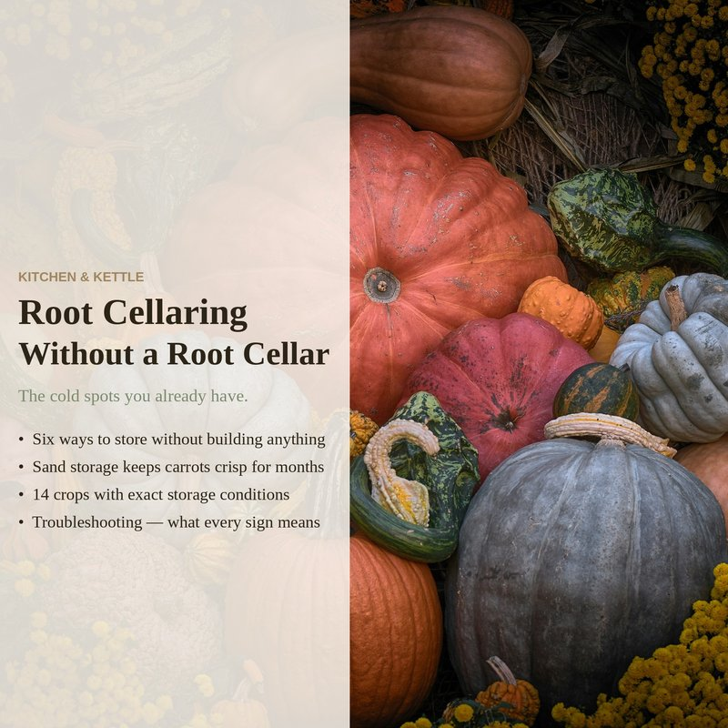

If you've ever pulled a limp carrot out of the fridge and wondered where the crunch went, the answer is water loss. A refrigerator pulls moisture out of the air — great for keeping leftovers from getting slimy, terrible for root vegetables, which are mostly water and need high humidity to stay firm. The solution is so simple it sounds fake: bury them in damp sand.
This is sand storage, and it's the closest thing to leaving vegetables in the ground. It works in a basement, a cold garage, a buried cooler, or even a five-gallon bucket in a cold closet. No root cellar required. No electricity. Just sand, a container, and a cold spot.
Why it works
Root vegetables are alive when you harvest them. A carrot in storage is still respiring — breathing in oxygen, breathing out carbon dioxide and water vapor. The goal of sand storage is to slow that respiration to a crawl without letting the vegetable dry out.
The sand does three things at once. First, it maintains near-perfect humidity around each vegetable — the damp sand creates a sealed microclimate where moisture can't escape. Second, it insulates against temperature swings. Third, it keeps vegetables from touching each other, which prevents ethylene gas from jumping between them and triggering sprouting or spoilage. Each carrot sits in its own little humid cave, breathing slowly, going nowhere.
What you need
- Clean sand. Play sand from the hardware store is perfect — about five dollars for a fifty-pound bag. Builder's sand works too. Don't use beach sand (too salty) or sand from a construction site (could be contaminated).
- A container. A plastic storage tote, a wooden crate lined with a garbage bag, a five-gallon bucket, or a metal trash can. Anything with enough depth to layer vegetables and sand. It doesn't need to be airtight — in fact, it shouldn't be.
- Vegetables. Carrots, beets, turnips, rutabagas, parsnips, celeriac, kohlrabi. Any firm root vegetable. Trim the tops to about half an inch — don't twist or snap them off; use a sharp knife for a clean cut. Leave the taproot intact.
- A cold, dark place. Between 32°F and 40°F is ideal. A basement corner against a foundation wall, an unheated garage (in cold climates), or an exterior stairwell. If you don't have one, a buried cooler in the yard works too.
- A thermometer. The cheapest digital one with a min/max memory will do. Knowing whether your storage spot dipped below freezing last night matters more than anything else.
How to do it
- Dampen the sand. Pour sand into a bucket and add water slowly, mixing with your hands, until the sand holds its shape when squeezed but doesn't drip. Think sandcastle consistency — not wet, just damp. If water pools at the bottom of your container later, the sand was too wet.
- Layer the bottom. Put two to three inches of damp sand in the bottom of your container.
- Arrange vegetables in a single layer. Lay them on the sand so they're not touching each other. This matters — contact points are where rot starts.
- Cover with more sand. Add another inch or two of sand, completely burying the first layer. Smooth it flat.
- Repeat. Another layer of vegetables, more sand, until the container is full or you're out of vegetables. Finish with a thick layer of sand on top — at least two inches.
- Place in cold storage. Move the container to your cold spot and set the thermometer on top.
Using it
When you want carrots for dinner, dig down into the sand, pull out what you need, and smooth the sand back over the rest. While you're in there, do a quick check — anything soft, spotted, or suspicious comes out. One bad carrot in a bin of fifty will spread rot through the whole container faster than you'd think.
The sand itself is reusable. After you empty a container in spring, spread the sand on a tarp in the sun for a day to dry it completely, then store it dry until fall. Wet sand left in a sealed container all summer will grow things you don't want.
What to expect
Carrots and beets stored this way at 35°F will stay crisp for four to six months. Parsnips and turnips, three to five. The vegetables will taste slightly sweeter over time — cold temperatures convert some starches to sugars, which is why overwintered carrots are so good. They won't be quite as firm as the day you dug them, but they'll be far better than anything that spent two weeks in a fridge.
What's in the full guide
Sand storage is one method among several. The full guide covers five other ways to store produce without a root cellar — basement corners, garage bins, buried coolers, crisper drawers, and cool closets — plus a crop-by-crop reference table with exact temperature and humidity ranges for fourteen vegetables, harvesting and curing instructions, a troubleshooting guide for when things go wrong, and a supplies checklist.
The full Root Cellaring Without a Root Cellar guide covers six modern storage methods, fourteen crops with exact conditions, harvesting and curing instructions, weekly maintenance, and a troubleshooting reference. Ten pages, printable, no construction required.
Root Cellaring Without a Root Cellar on Etsy →